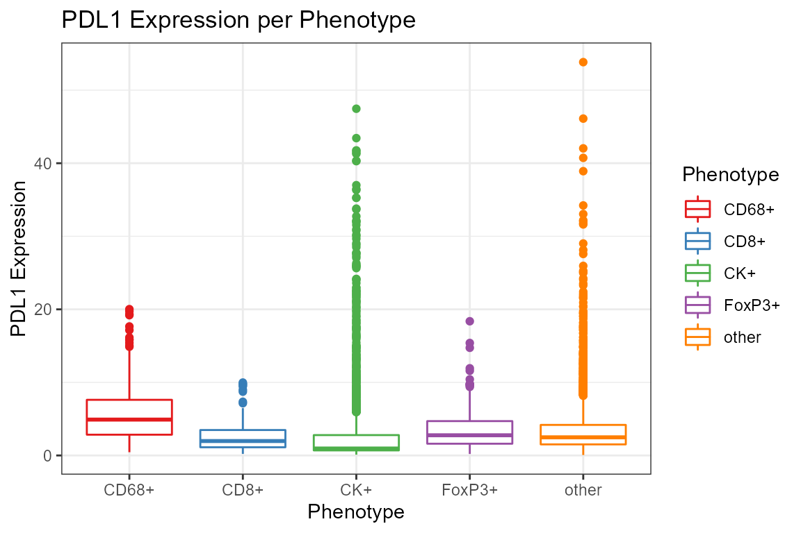

Reading and exploring inForm tables
Kent Johnson
2018-12-27
reading_tables.RmdinForm tables
Akoya Biosciences’ inForm® software exports a variety of tabular data including information about cells and tissue categories. Tables are exported as tab-delimited text files with file names derived from the name of the source image by adding a suffix. Some of the suffixes, and the data contained in the files, are
-
cell_seg_data.txt- Detailed information about each cell in a field, including location, size, expression data for each component and possibly the phenotype and the containing tissue category. -
cell_seg_data_summary.txt- Summary information about the cells in a field, including cell counts (stratified by phenotype and tissue category, if available) and summary size and expression data. -
tissue_seg_data.txt- Detailed information about each tissue category region in the field, including size, centroid and expression data. -
tissue_seg_data_summary.txt- Summary information about tissue category regions.
Cell segmentation data
phenoptr is primarily concerned with loading and processing cell_seg_data.txt files created by inForm. In the package documentation, these files are called cell seg data files and the data within them is referred to as cell seg data. Most examples use a variable named csd to contain cell seg data.
Reading cell segmentation data files
The read_cell_seg_data function reads cell seg data files and does useful cleanup on the result including removing empty columns, converting pixels to microns and simplifying column names.
library(phenoptr)
# sample_cell_seg_path gives the path to a sample file included with phenoptr.
# Change this to be the path to your data. For example you might use
# path <- 'C:/data/my_experiment/my_image_cell_seg_data.txt'
path <- sample_cell_seg_path()
# Read the data file
csd <- read_cell_seg_data(path)
# Show some nicely shortened names
# The suffix "(Normalized Counts, Total Weighting)" has been removed.
grep('Nucleus.*Mean', names(csd), value=TRUE)[1] "Nucleus PDL1 (Opal 520) Mean" "Nucleus CD8 (Opal 540) Mean"
[3] "Nucleus FoxP3 (Opal 570) Mean" "Nucleus CD68 (Opal 620) Mean"
[5] "Nucleus PD1 (Opal 650) Mean" "Nucleus CK (Opal 690) Mean"
[7] "Nucleus DAPI Mean" "Nucleus Autofluorescence Mean"The value returned from read_cell_seg_data is a data_frame (also known as a tibble - the tidyverse version of a data.frame) and can be inspected as you would any other data_frame.
# How many cells did we read?
nrow(csd)[1] 6072# How many cells of each phenotype are in each tissue category?
table(csd$`Tissue Category`, csd$Phenotype)
CD68+ CD8+ CK+ FoxP3+ other
Stroma 316 177 65 194 2760
Tumor 101 51 2192 34 182Notice that column names containing spaces or other special characters, such as Tissue Category in the example above, generally must be enclosed in backticks (`) in code. If you are editing in RStudio (highly recommended), tab-completion will often include the backticks for you.
Creating new columns
The dplyr::mutate function makes it very easy to add new columns to your data. This example adds a column for PDL1 positivity and counts cells in each phenotype stratified by positivity.
library(tidyverse)csd <- csd %>% mutate(pdl1_plus=`Entire Cell PDL1 (Opal 520) Mean`>3)
table(csd$pdl1_plus, csd$Phenotype)
CD68+ CD8+ CK+ FoxP3+ other
FALSE 113 158 1726 131 1761
TRUE 304 70 531 97 1181
The pipe operator %>%
These examples make extensive use of the pipe operator (%>%) to combine operations. If you are not familiar with this operator, you may want to read this introduction.
Aggregating data
The functions dplyr::group_by and dplyr::summarize can be used to aggregate data within groups. dplyr::filter removes unwanted values. This example computes the mean PDL1 expression for each phenotype, omitting other cells.
csd %>%
filter(Phenotype!='other') %>%
group_by(Phenotype) %>%
summarize(mean_pdl1=mean(`Entire Cell PDL1 (Opal 520) Mean`))# A tibble: 4 x 2
Phenotype mean_pdl1
<chr> <dbl>
1 CD68+ 5.66
2 CD8+ 2.53
3 CK+ 3.00
4 FoxP3+ 3.48phenoptrExamples package demonstrates aggregation across multiple fields from multiple samples.
Plotting data
ggplot2 is a powerful and versatile plotting package well suited to exploratory data visualization. Here are two brief examples to whet your appetite.
library(ggplot2)
ggplot(csd, aes(Phenotype, `Entire Cell PDL1 (Opal 520) Mean`, color=Phenotype)) +
geom_boxplot() +
scale_color_brewer(palette='Set1') +
labs(y='PDL1 Expression', title='PDL1 Expression per Phenotype')
ggplot(csd %>% filter(Phenotype!='other'),
aes(`Entire Cell PDL1 (Opal 520) Mean`,
`Entire Cell PD1 (Opal 650) Mean`,
color=Phenotype)) +
geom_point(size=1, alpha=0.2) +
facet_wrap(~Phenotype) +
scale_x_log10() + scale_y_log10() + scale_color_brewer(palette='Set1') +
labs(x='PDL1 Expression', y='PD1 Expression',
title='Comparison of PD1 and PDL1 Expression per Phenotype')
Further reading and examples
The examples here only scratch the surface of what dplyr, ggplot2 and other functions in the tidyverse can do. If you’d like to learn more about the tidyverse, a good place to start is Garrett Grolemund and Hadley Wickham’s book, available free online at R for data science. The Data transformation chapter introduces the dplyr functions used in this tutorial.
phenoptrExamples package include examples of reading data from multiple fields and aggregating across fields. That package includes more extensive sample data which can be used for practice.